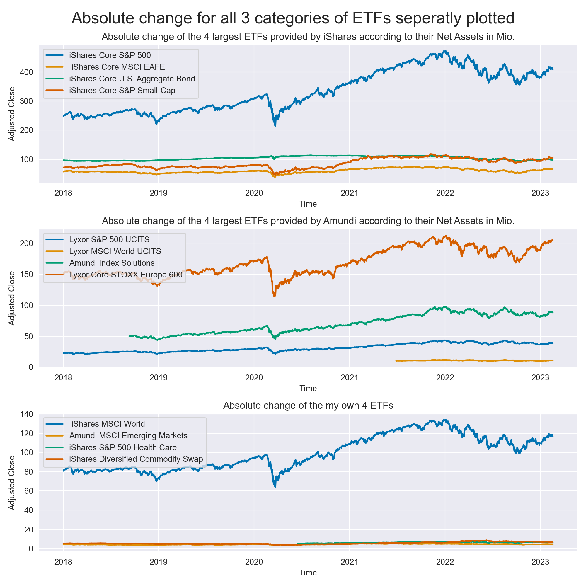
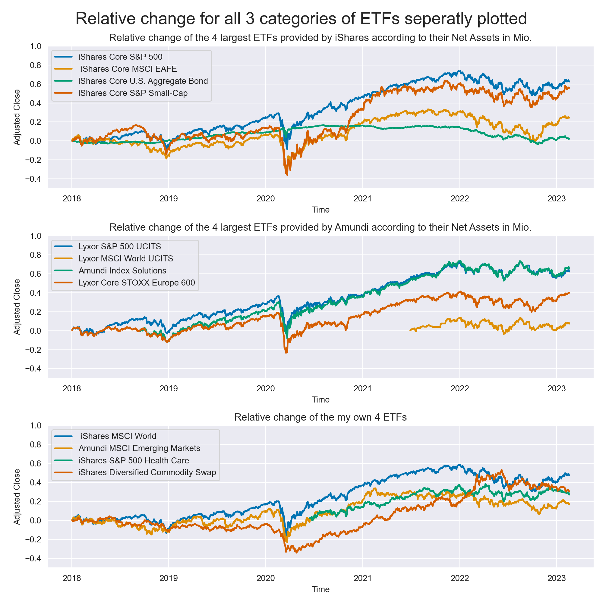
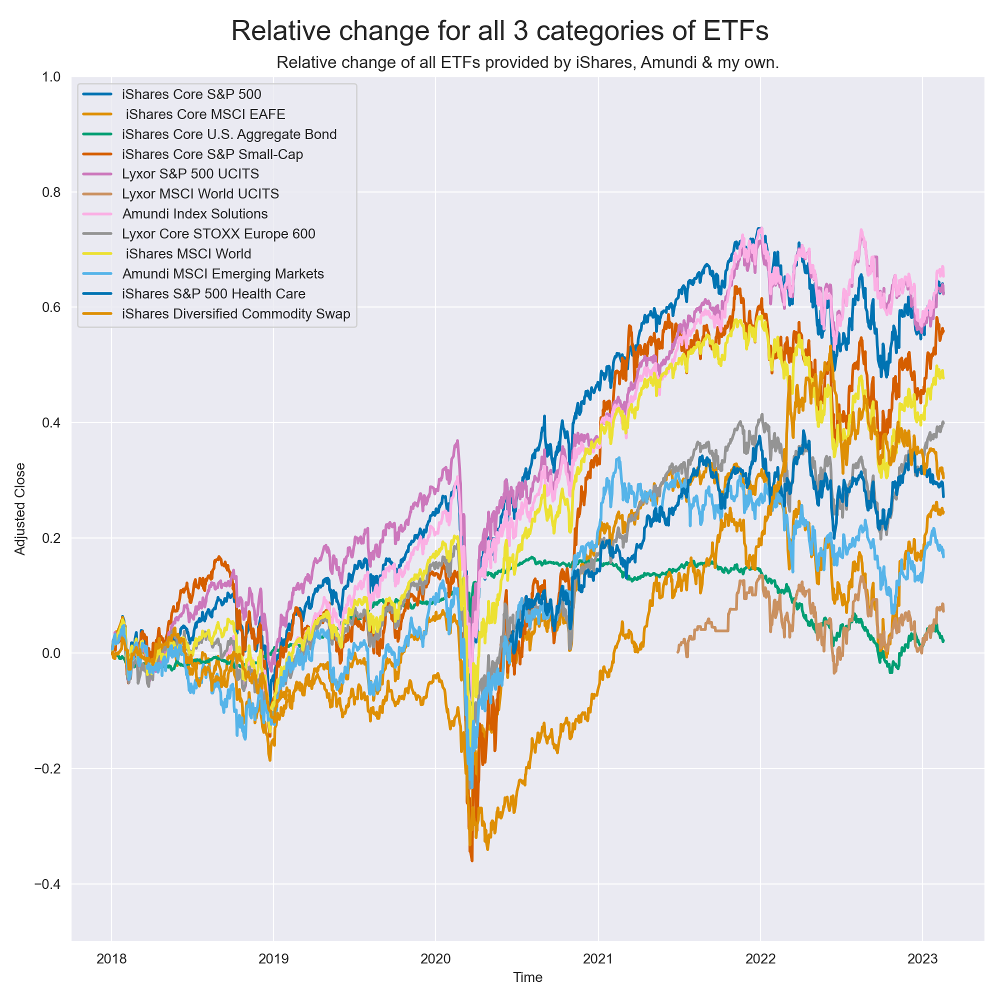
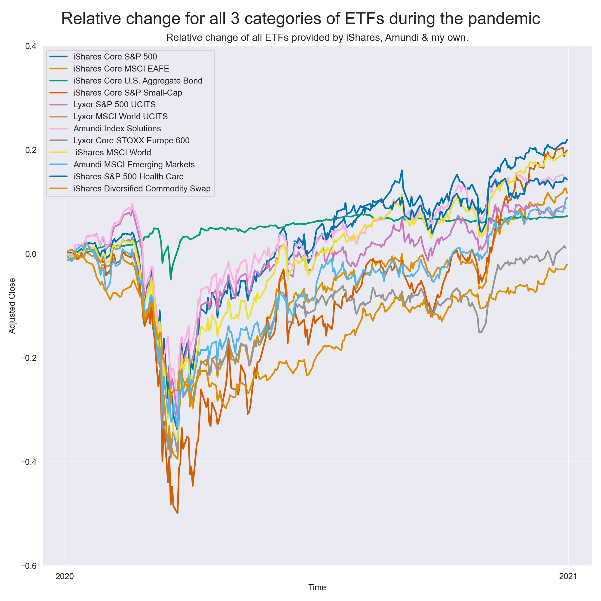

This entry shows my first private project, which I assembled by using Python code. It seeks to give a quick
overview of the largest ETF´s provided by the most common suppliers (picked by quick research).
I planned to include graphical and logical comparisons, and move on with basic optimal portfolio theory,
concretely equal weigthing and efficient frontier approaches.
Clearly, this project is only personally motivated (fun & comparison with own ETF´s I invested in) and lacks at certain points,
e.g. there is no scientific pattern behind the picking, and diversification will not be covered here.
In the end, I could get a better picture about missed opportunities, in means of returns.
Names of the ETFs for deaper understanding & better comparison
- IVV: iShares Core S&P 500 ETF
- IEFA: iShares Core MSCI EAFE ETF (Europe, Australasia, Far East)
- AGG: iShares Core U.S. Aggregate Bond ETF (fixed income securities)
- IJR: iShares Core S&P Small-Cap ETF
- SPX.MI: Lyxor S&P 500 UCITS ETF
- WLDC.MI: Lyxor MSCI World UCITS ETF Acc
- USRI.PA: Amundi Index Solutions - Amundi MSCI USA SRI UCITS ETF (track the performance of MSCI USA SRI Filtered ex Fossil Fuels Index)
- MEUD.PA: Lyxor Core STOXX Europe 600
- URTH: iShares MSCI World ETF
- AEEM.PA: Amundi Index Solutions - Amundi MSCI Emerging Markets
- IUHE.AS: iShares V PLC - iShares S&P 500 Health Care Sector UCITS ETF
- ICOM.L: iShares Diversified Commodity Swap UCITS ETF
The following graph shows the absolute change over time, which is seems not optimal for comparisons.
The next graphs provide now a relative comparison over time, which shows the the percentage change. In general, it makes sense to utilize both change measures for conclusions (see for instance here for further explanations)
So far, I grouped the ETF´s by there provider or showed those I invested myself. For now, to make things look complicated & maybe get a first impressions of their behavior (e.g. correlations), we combine them all into one plot.
The get a closer look on possible corrleations, I zoomed into the year 2020 (mostly known as Covid-year). The zoomed graphs shows quite clearly, that the ETFs tend to behave similarly.
Two interesting perspectives: how does the optimal weighting for my own assets looks like & how does the optimal weighting for all assets looks like.
1. Equal Weighted Holdings
2. Mean-variance method
Explanation Efficient Frontier: The EF shows the set of optimal portfolios that offer the highest expected return for a given risk level or the lowest risk for a given level of expected return.
It is clearly shown, that my past decisions lead to missing opportunities or missing growth, resp. Therefore, my choices were rather "bad".
To get further insights, such as heatmaps, efficient variance sets, or relative numbers in tables coloured by there positivity/negativity, please see my repository on GitHub "startfineng".
Furthermore, please excuse my laziness at some points regarding formulation effort.